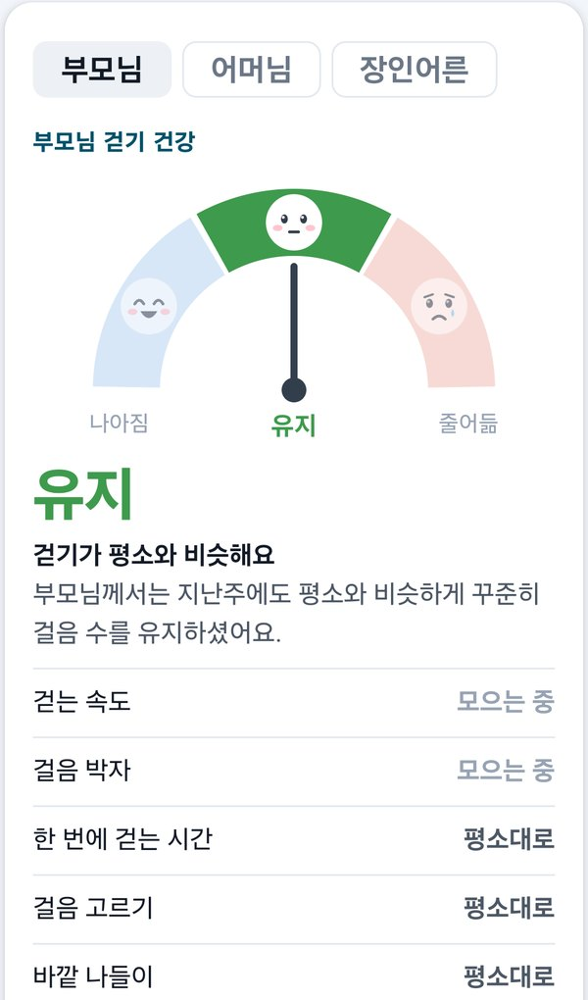

약 740만 명
어느새, 나도 모르게
운동이 부족한 65세 이상 부모님입니다. 나이가 들수록 더 부족해집니다(19~64세 53.9% → 65세 이상 66.8%).
국가데이터처 2026 고령자통계 · 대한의사협회지 2022
부모님의 걷기와 건강은 어느새, 나도 모르게 달라집니다.
약 740만 명
운동이 부족한 65세 이상 부모님입니다. 나이가 들수록 더 부족해집니다(19~64세 53.9% → 65세 이상 66.8%).
국가데이터처 2026 고령자통계 · 대한의사협회지 2022
89.7%
65세 이상 부모님 열 분 중 아홉 분은 자녀와 떨어져 사십니다. 자녀가 매일 곁에서 볼 수 없습니다.
보건복지부 2023년도 노인실태조사
평생 세 번
걷는 힘과 균형을 보는 노인신체기능검사는 66·70·80세에만 합니다. 그 사이의 느린 변화는 어디에도 남지 않습니다.
국민건강보험공단 일반건강검진 안내
검사와 검사 사이, 아무도 보지 못하던 부모님 걷기의 변화를 이제 자녀가 알아봅니다.
앱을 켜지 않아도, 시작 버튼을 누르지 않아도 됩니다. 폰을 지니고 계시면 걸음이 저절로 쌓이고, 밖에서 걸으시면 산책인 것을 앱이 스스로 알아봅니다. 걷기 · 자동 기록 · 자녀의 응원 · 걷기 건강이 다시 다음 걷기로 이어집니다.
폰을 지니고 계시면 됩니다. 앱을 켜지 않아도 하루 걸음이 쌓입니다.
밖에서 걸으신 것을 스스로 알아채 시작·멈춤·마침과 거리를 기록하고, 차로 이동하신 구간은 덜어 냅니다.
그분의 평소와 견주어 걷기 능력이 나아졌는지, 유지되는지, 줄었는지 알려 드립니다.
자녀 앱에서 걷기 시작·마침 소식을 받고, 글이나 목소리로 응원하고, 걸으신 만큼 용돈을 보내실 수 있습니다.
평균적인 어르신이 아니라 그분의 평소가 기준입니다. 어르신은 누르실 것이 없습니다.

비·눈·폭염·한파, 먼 나들이와 외박, 오르막 길처럼 그분에게 드문 날을 헤아려, 그런 주에는 “쉬어 가요”로 판정을 쉽니다. 걷기가 줄어든 까닭이 날씨라면 자녀분이 괜한 걱정을 하지 않도록요.
의학적 판정은 아닙니다. 질병이나 위험을 말하지 않고, 그분의 평소와 견준 방향만 보여 드립니다.
걷는 일은 몸에만 좋은 것이 아닙니다.
밖으로 나서는 하루가 이웃과 지역사회로 다시 이어집니다.
앱을 켜지 않아도, 시작 버튼을 누르지 않아도 됩니다. 폰을 지니고 계시면 하루 걸음이 저절로 쌓입니다.
걸음 센서, 이동 속도, 구글 활동 인식 세 가지를 함께 보아 차·버스로 이동하신 구간과 폰이 흔들린 것을 걷기에서 덜어 냅니다.
걷는 속도·걸음 박자·걸음 고르기 등을 그분의 평소와 견주어 나아짐·유지·줄어듦으로 알려 드립니다.
걷기 시작·마침 소식이 자녀 앱에 오고, 글이나 목소리로 응원을 보내실 수 있습니다. 걸으신 만큼 자녀분이 직접 용돈을 보내실 수도 있습니다.
걸음 수만 셉니다. 챌린지가 끝나면 기록도 끝납니다.
나이노트는 걷는 모습의 변화를 그분의 평소와 견줍니다.
정해진 기간만 기기를 빌려 쓰고 반납해야 합니다.
나이노트는 쓰시던 폰 하나로, 기간 없이 이어집니다.
특정 기종 전용이거나, 본인만 결과를 봅니다.
나이노트는 갤럭시에서 조작 없이 재고 자녀에게 전합니다.
움직임이나 위치만 알려 줄 뿐, 걷기의 변화는 남지 않습니다.
나이노트는 걷기 건강과 가족의 응원·용돈으로 다시 걷게 합니다.
새로 사실 것도, 차실 것도, 충전하실 것도 없습니다.
쓰시던 폰에 앱을 깔면 오늘부터 걸음이 쌓입니다.
같은 출근길을 16번 걸어 지도 거리와 견주었고(93~104m · 가운데 101m), 걸음 수는 같은 날 다른 걷기 앱과 같은 9,095보였습니다.
핵심 기술을 특허 출원했고, 회사 브랜드 ‘텔로스 TELOS’ 상표를 출원했습니다.
위치기반서비스사업 신고, SW사업자 신고, 벤처기업 확인, 소셜벤처 판별을 마쳤습니다.
어느 길로 다녀오셨는지는 폰 안에만 남습니다. 자녀분께는 걷기를 시작·멈춤·마치신 자리만 보여 드립니다.
보호자 또는 기관에서 도입 문의를 남깁니다.
이용 대상·규모·현장 환경을 함께 논의합니다.
앱 설치와 초기 설정을 지원해 드립니다.
걸음이 쌓이기 시작하고, 자녀·담당자에게 전해집니다.
빠름을 넘어, 사람의 시간 옆에 의미 있게 자리하는 기술.
그것이 텔로스가 나이노트를 만드는 이유입니다.
아닙니다. 부모님은 아무것도 안 하셔도 됩니다. 폰을 지니고 계시면 하루 걸음이 저절로 쌓이고, 밖에서 걸으시면 앱이 스스로 산책인 것을 알아채 시간과 거리를 기록합니다.
보이지 않습니다. 걸으신 길(이동 경로)은 부모님 폰 안에만 남고 저희 서버로도, 자녀분께도 보내지 않습니다. 35일이 지나면 폰에서 자동으로 지워집니다. 자녀분께 가는 것은 걸음 수·거리·시간과 걷기를 시작·멈춤·마치신 자리뿐입니다.
덜어 냅니다. 걸음 센서, 이동 속도, 구글 활동 인식을 함께 보아 사람이 걸은 것이 아닌 구간은 걷기에서 제외합니다. 차 안에서 폰으로 영상을 29분 보는 동안 걷기로 잘못 센 것은 0건이었습니다.
걷는 속도, 걸음 박자, 한 번에 걷는 시간, 걸음 고르기, 바깥 나들이 다섯 가지를 그분의 평소와 견주어 “나아짐·유지·줄어듦”으로 알려 드립니다. 비·폭염이나 나들이가 많았던 주에는 “쉬어 가요”로 판정을 쉽니다.
지금은 갤럭시 등 안드로이드 폰에서 쓰실 수 있습니다. 구글 플레이에서 ‘나이노트’를 찾아 받으시면 됩니다.
아닙니다. 저희는 돈을 맡아 두지 않습니다. 걸으신 거리를 자녀분께 보여 드릴 뿐이고, 보내실지와 얼마를 보내실지는 자녀분이 정하셔서 쓰시던 송금 앱으로 직접 보내십니다.
지금은 어르신과 자녀 모두 무료입니다. 자녀 앱의 Pro 기능도 지금은 모두에게 무료로 열어 두었습니다. 유료로 바꾸게 되면 이용 조건을 미리 알려 드립니다.
아닙니다. 나이노트는 걷기 활동을 기록하고 그분의 평소와 견준 방향을 알려 드리는 일상 건강관리 서비스이며, 질병의 진단·치료를 목적으로 하지 않습니다. 의학적 판정은 아닙니다. 측정값을 의학적 판단의 근거로 사용하지 마십시오.
텔로스(TELOS)는 ‘궁극의 목적’을 뜻합니다.
우리는 노년의 존엄, 그리고 사람을 다시 사회와 잇는 일을
기술의 목적으로 삼습니다.